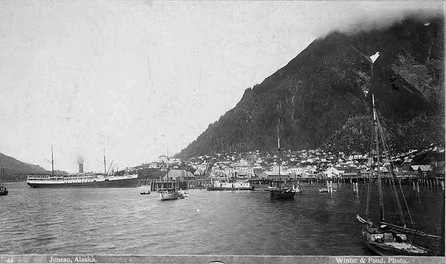
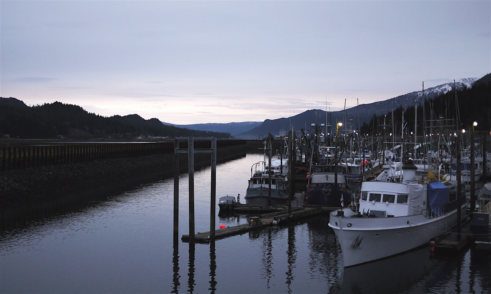

Directory / Southeast Alaska / Juneau, AK
Juneau tides — Gastineau Channel, the downtown harbors & Auke Bay
High and low tides for the coming week from NOAA station 9452210 (Juneau, Gastineau Channel — 58.2988, -134.4106). Times are local (AKST/AKDT). Heights are feet above Mean Lower Low Water (MLLW). Juneau is Alaska’s capital, and no road connects it to the rest of the state. Boats tie up in two places. Downtown, the City and Borough of Juneau (CBJ) runs Harris, Aurora, and Douglas harbors on Gastineau Channel. Out the road in Auke Bay, Statter Harbor is the busy transient harbor on the Stephens Passage and Lynn Canal side. Harris and Aurora sit north of the Juneau-Douglas bridge, so every boat with a mast or tall antenna has to think about the tide.
Bridge clearance, big tides & the Harris grid
Under the bridge. To reach Harris Harbor, Aurora Harbor, or the Wayside Park float, you must pass under the Juneau-Douglas bridge. CBJ Docks & Harbors gives the clearance as 51 ft at Mean High Water (Ocean Grafix chart 17315) on its bridge information sheet. Its FY2025 harbor brochure lists 65.6 ft on a 0.0 ft tide. Every foot of tide comes off that number. At the biggest high of the next five weeks (below), the clearance works out to roughly 65.6 − 19.9 ≈ 46 ft. Red lights mark the edges of the channel under the span, and green lights mark the center. Read the clearance gauge on the west-side pylon before you commit. Douglas Harbor and Statter Harbor need no bridge transit.
The big swing. In the NOAA predictions fetched 2026-11-13, the largest swing in the next five weeks is on Wednesday, November 25, 2026: a 19.9 ft high at 12:54 PM, then a −3.9 ft low at 7:32 PM. That is a drop of about 23.8 ft in under seven hours. Minus tides come every evening from Nov 22 through Nov 29, and again from Dec 6 through Dec 11. All of them fall after dark this time of year.
Using the grid. Harris Harbor has a tidal grid. CBJ posts its grid bent elevations; book through the Aurora Harbor office (907-586-5255, VHF 73). For lifts and big jobs, the CBJ brochure lists several private haul-out operators (see the directory below). For loading gear or groceries at Auke Bay, the reservation-only Auke Bay Loading Facility has a 180 ft drive-down float and two 2-ton cranes.
Downtown vs. Auke Bay weather. NWS Juneau does not issue a separate forecast for Gastineau Channel. The nearest zones are Stephens Passage (PKZ031, south and west of Douglas Island) and Southern Lynn Canal (PKZ013, north of Auke Bay). In the forecast issued 2:07 PM AKST Fri Nov 13, 2026, both zones carried a Small Craft Advisory. Stephens Passage then called for SE 25 kt with gusts to 45 kt Sunday night. In Juneau, a north wind (“Taku”) and a southeast blow can trade places in a day, so check both zones below.
Computed from NOAA CO-OPS hi/lo predictions for 9452210 (2026-11-14 through 2026-12-19), the NWS coastal waters forecast text, and CBJ Docks & Harbors pages and PDFs, fetched 2026-11-13 AKST. The clearance figure is arithmetic on CBJ’s published number, not a measurement. Not for navigation.
Juneau then & now
Historic

.jpg){kind=link}
Current

.jpg){kind=link}
Official NOAA predictions Station home NOAA chart viewer View on Windy
Port Sponsor — Juneau, AK
Top placement for fuel docks, marinas, yards, and marine businesses.
$25–$50 / month
Saturday, November 14, 2026
| Tide | Time (local) | Height (MLLW) |
|---|---|---|
| High | 4:04 AM | 13.0 ft |
| Low | 9:34 AM | 6.3 ft |
| High | 3:24 PM | 14.9 ft |
| Low | 10:03 PM | 1.9 ft |
Sunday, November 15, 2026
| Tide | Time (local) | Height (MLLW) |
|---|---|---|
| High | 4:54 AM | 12.4 ft |
| Low | 10:24 AM | 6.9 ft |
| High | 4:12 PM | 13.8 ft |
| Low | 10:52 PM | 2.7 ft |
Monday, November 16, 2026
| Tide | Time (local) | Height (MLLW) |
|---|---|---|
| High | 5:55 AM | 12.1 ft |
| Low | 11:30 AM | 7.2 ft |
| High | 5:12 PM | 12.8 ft |
| Low | 11:50 PM | 3.3 ft |
Tuesday, November 17, 2026
| Tide | Time (local) | Height (MLLW) |
|---|---|---|
| High | 7:01 AM | 12.4 ft |
| Low | 12:50 PM | 6.8 ft |
| High | 6:28 PM | 12.2 ft |
Wednesday, November 18, 2026
| Tide | Time (local) | Height (MLLW) |
|---|---|---|
| Low | 12:56 AM | 3.7 ft |
| High | 7:59 AM | 13.1 ft |
| Low | 2:05 PM | 5.7 ft |
| High | 7:48 PM | 12.1 ft |
Thursday, November 19, 2026
| Tide | Time (local) | Height (MLLW) |
|---|---|---|
| Low | 2:00 AM | 3.8 ft |
| High | 8:47 AM | 14.1 ft |
| Low | 3:04 PM | 4.1 ft |
| High | 8:59 PM | 12.7 ft |
Friday, November 20, 2026
| Tide | Time (local) | Height (MLLW) |
|---|---|---|
| Low | 2:58 AM | 3.6 ft |
| High | 9:28 AM | 15.4 ft |
| Low | 3:53 PM | 2.2 ft |
| High | 9:59 PM | 13.5 ft |
Saturday, November 21, 2026
| Tide | Time (local) | Height (MLLW) |
|---|---|---|
| Low | 3:49 AM | 3.4 ft |
| High | 10:07 AM | 16.7 ft |
| Low | 4:38 PM | 0.3 ft |
| High | 10:52 PM | 14.5 ft |
Tide data: NOAA CO-OPS station 9452210, predictions (hi/lo, MLLW, local standard/daylight time). Refreshed with each nightly build; the marine-weather snapshot time below shows the latest fetch. Currents: the nearest NOAA current station in our port list is SEA0801 (about 0.7 km away) — see NOAA current predictions.
Marine weather & cameras
NWS marine forecast — Stephens Passage (PKZ031)
Issued 207 PM AKST Fri Nov 13 2026. Snapshot fetched 2026-11-13 21:17 AKST from NWS text product. Official zone forecast · Raw text
...SMALL CRAFT ADVISORY THROUGH THIS AFTERNOON...
- .TONIGHT...N wind 25 kt becoming 15 kt. Seas 3 ft. Rain.
- .SAT...N wind 15 kt. Seas 3 ft.
- .SAT NIGHT...N wind 20 kt. Seas 4 ft.
- .SUN...N wind 25 kt. Seas 4 ft. Rain.
- .SUN NIGHT...SE wind 25 kt. Gusts to 45 kt. Seas 5 ft. Rain.
- .MON...SE wind 25 kt. Seas 5 ft.
- .TUE...E wind 15 kt. Seas 3 ft.
- .WED...SE wind 15 kt. Seas 3 ft.
NWS marine forecast — Southern Lynn Canal (PKZ013)
Issued 207 PM AKST Fri Nov 13 2026. Snapshot fetched 2026-11-13 21:17 AKST from NWS text product. Official zone forecast · Raw text
...SMALL CRAFT ADVISORY THROUGH THIS EVENING...
- .TONIGHT...NW wind 25 kt diminishing to 15 kt late. Seas 4 ft. Rain.
- .SAT...NW wind 15 kt. Seas 3 ft. Rain in the morning.
- .SAT NIGHT...NW wind 25 kt. Seas 5 ft. Rain late.
- .SUN...N wind 20 kt. Seas 4 ft. Rain.
- .SUN NIGHT...N wind 20 kt. Seas 4 ft. Rain.
- .MON...SE wind 20 kt. Seas 4 ft.
- .TUE...SE wind 15 kt. Seas 3 ft.
- .WED...SE wind 15 kt. Seas 3 ft.
Nearby NDBC observation — Juneau (JNEA2, NOAA 9452210)
0 kt, gust 1 kt
Observation time 2026-11-13 20:48 AKST (converted to AKST). Attribution: NOAA NDBC station JNEA2. Snapshot fetched 2026-11-13 21:17 AKST.
Nearby NDBC observation — Portland Island (PTLA2, off Auke Bay)
wind 330°, 16 kt, gust 23 kt, air 42°F, 986.9 hPa
Observation time 2026-11-13 21:02 AKST (converted to AKST). Attribution: NOAA NDBC station PTLA2. Snapshot fetched 2026-11-13 21:17 AKST.
Nearby NDBC observation — Scull Island (SCXA2, Stephens Passage)
wind 350°, 16 kt, gust 19 kt, air 42°F, 986.9 hPa
Observation time 2026-11-13 21:02 AKST (converted to AKST). Attribution: NOAA NDBC station SCXA2. Snapshot fetched 2026-11-13 21:17 AKST.
Harbor webcams
- FAA WeatherCams — Juneau Tram (free public cameras on Mount Roberts looking south and west over Gastineau Channel and downtown; link only, not embedded)
- FAA WeatherCams — Douglas Island (north and northwest views; link only)
- FAA WeatherCams — Lena Point (four views toward Favorite Channel, Lynn Canal, and Stephens Passage, near Auke Bay; link only)
- FAA WeatherCams — Juneau International Airport (PAJN) (current METAR and nearby camera map; link only)
All four pages loaded and showed current images on 2026-11-13 around 8:20 PM AKST. Expect dark frames on winter nights. CBJ’s own photos & webcams page points to these FAA cameras. We did not find a free public camera aimed at the harbor floats. Harbor businesses with a public cam: email us and we will link it.
Juneau boater notes (official links)
- CBJ Docks & Harbors contacts. Aurora Harbor office (Aurora, Harris, and Douglas): 907-586-5255, VHF 73; on-duty cell 907-321-1115. Statter Harbor (Auke Bay): 907-789-0819, VHF 16/74; on-duty cell 907-321-0935. After hours, call Juneau Police non-emergency at 907-586-0600. The brochure says transients must register with the harbormaster within 8 hours of arrival.
- Harbor facilities: slip counts, power, pump-outs, launch ramps (Douglas, Harris, North Douglas, Statter, Amalga, Echo Cove), and the Taku Harbor public floats about 22 miles southeast. From May 1 to Oct 1, Statter enforces a 10-day movement rule for transients.
- Fuel docks & private marinas: downtown has Crowley and Petro Marine; Auke Bay has Petro Marine at Statter and Delta Western.
- Juneau harbor speed-limit map and Auke Bay speed limits. The limit is 5 knots in the inner harbors.
- Alaska Marine Highway: ferries leave from the Auke Bay terminal, next to Statter Harbor.
- ADF&G Juneau Management Area (sport fishing) and Southeast commercial fisheries — emergency orders and openers.
- NOAA ENC chart viewer. Gastineau Channel and the Juneau harbors are on NOAA chart 17315. We link to NOAA’s viewer and do not host charts.
Local marine & shore directory
Verified public listings only. List free · Get featured
Marine services
Moorage & marinas
Seafood processors & buyers
Fuel docks
Shipyards & haul-outs
Boat repair & mechanics
Marine suppliers & chandleries
Electronics sales & installation
Welding & fabrication
Canvas & upholstery
Surveyors
Towing & salvage
Ice & bait
No verified listing yet — list your business free.
Fishing charters
No verified listing yet — list your business free.
Ashore for boaters
Groceries & provisioning
Hardware
Liquor stores
Laundromats
Showers
Lodging
Restaurants
Medical clinics
Pharmacies
Post office & shipping
Airport & floatplane
Propane
Auto & truck rental
We checked these listings on 2026-11-13 against public sources: the CBJ Docks & Harbors facilities, contacts, and fuel-dock pages, and the CBJ Docks & Harbors FY2025 harbor brochure (its haul-out, repair, electronics, parts, seafood, propane, travel, and rental lists); the ADF&G 2025 Southeast shore-based processor registrations (Alaska Glacier Seafoods, Jerry’s Meats & Seafoods, and Taku Smokeries/Fisheries); and each business’s own site where it has one (Taku Fisheries, Alaska Glacier Seafoods, Alaska Seafood Company, Western Auto Marine, Broken Rudder, Simon’s Marine Repair, Tagish Marine, Coastal Custom Canvas, Foodland IGA, Super Bear IGA, Breeze In, Bartlett Regional Hospital, Alaska Seaplanes, Ward Air, Waterfront on Glacier) plus SAMS surveyor listings and Travel Juneau. CBJ says its list is a courtesy, not an endorsement, and so is ours. Some processor lines are seasonal. Basic listings are free; a Featured listing is $10/month or $100/year. For corrections or a free listing, contact J.L. Miller at pacifictides.ak@gmail.com (email only).
Local news — Juneau, AK
Plain links to local outlets. Always check the source for the latest. Local news partners welcome.
Free weekly tides & marine weather
Get a short email for your port. We do not sell your email. Privacy.
Mailing list powered by Buttondown.
Boating gear on Amazon
As an Amazon Associate I earn from qualifying purchases.
Helpful search links for common gear. Prices and availability are on Amazon.
Other Alaska ports
Sources
- NOAA CO-OPS station 9452210 — Juneau (MDAPI name Juneau; lat 58.2988, lng -134.4106; verified 2026-11-13). Datums (2012–2016 epoch): MHW is 15.34 ft above MLLW.
- Nearby currents reference: SEA0801 (not plotted on this page)
- Predictions API:
api.tidesandcurrents.noaa.gov/api/prod/datagetter(product=predictions, interval=hilo, datum=MLLW, time_zone=lst_ldt) - NWS Juneau coastal waters forecast zones PKZ031 Stephens Passage and PKZ013 Southern Lynn Canal (zones checked via the api.weather.gov zone lookup; Gastineau Channel itself falls outside any zone polygon)
- NDBC observations: JNEA2 Juneau (NOAA 9452210), PTLA2 Portland Island, SCXA2 Scull Island
- CBJ Docks & Harbors: facilities, contacts, fuel docks, bridge information, and the FY2025 harbor brochure (checked 2026-11-13)
- ADF&G 2025 Southeast Alaska shore-based processors by port
- Directory:
data/businesses.csvrows for port_slug=juneau, each with its public source URL (verified 2026-11-13) - Photos: Winter & Pond / University of Washington Libraries (public domain); Joseph from Cabin On The Road (CC BY-SA 2.0) via Wikimedia Commons. Graphics: original Pacific Tides artwork.